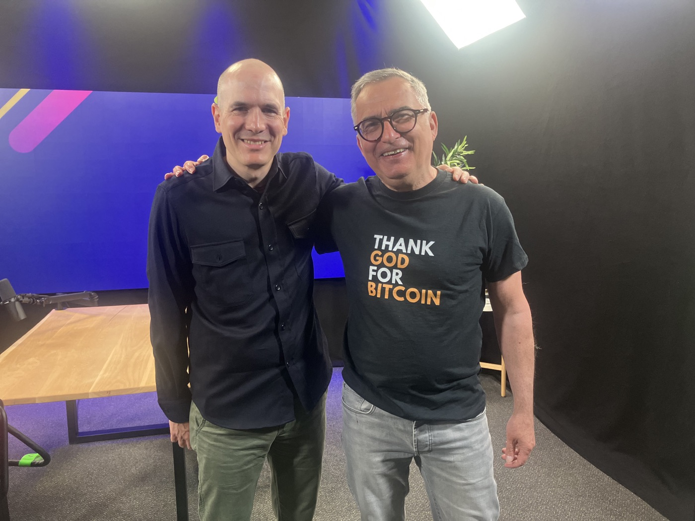

Warum Sichtbarkeit jetzt zählt
Die letzten drei Monate standen bei Impact4Entrepreneurship stark im Zeichen der Außenwirkung. Für I4E ist das ein wichtiger Schritt, denn unsere Arbeit soll sichtbar werden – nicht um unserer selbst willen, sondern weil die Themen, für die wir stehen, gesellschaftlich immer wichtiger werden.
Wir möchten junge Menschen, Gründerinnen und Gründer sowie Unternehmerinnen und Unternehmer befähigen, wirtschaftliche Zusammenhänge besser zu verstehen und verantwortungsvoll zu handeln. Gerade in einer Zeit, in der viele Menschen spüren, dass Geld, Wirtschaft und Zukunft neu gedacht werden müssen, braucht es Orte der Orientierung, der Bildung und des ehrlichen Gesprächs.
Mit I4E wollen wir solche Räume schaffen: Räume, in denen Finanzbildung, Unternehmergeist und gesellschaftliche Verantwortung zusammenkommen. Räume, in denen junge Menschen lernen, nicht nur Konsumenten eines Systems zu sein, sondern Gestalter ihrer eigenen Zukunft.
Ich bin sehr gespannt auf Eure Reaktionen zu diesem Newsletter und freue mich über Rückmeldungen, Gedanken und Anregungen.
Was sich konkret bewegt – Einblick in unsere ArbeitWas ist Geld wert? Eine Schulstunde über Inflation und Bitcoin
Im Rahmen des Bildungsprogramms „Life Teach Us" durfte ich am 3. Juni in Leipzig eine Schulstunde in der 11. Klasse des Gymnasiums Neue Nikolaischule gestalten. Das Thema lautete: „Was ist Geld eigentlich wert?"
Eigentlich hatte ich eine Präsentation vorbereitet. Doch sehr schnell wurde deutlich: Die Fragen der Schülerinnen und Schüler waren so wach, so konkret und so faszinierend, dass ich bewusst von meinem Plan abgewichen bin. Statt einem klassischen Vortrag entstand ein lebendiger Dialog über Geld, Wert und Zukunft.
Wir sprachen über Inflation, also darüber, warum Geld an Kaufkraft verliert. Wir behandelten Deflation, also die Frage, was passiert, wenn Preise sinken und Menschen ihr Geld zurückhalten. Und wir kamen auf Stagflation zu sprechen – eine besonders schwierige Lage, in der wirtschaftliche Schwäche und steigende Preise gleichzeitig auftreten.
Besonders intensiv wurde die Diskussion beim Thema Werterhaltung. Was bleibt wertvoll, wenn Geld an Wert verliert? Immobilien? Gold? Bildung? Fähigkeiten? Vertrauen? Oder vielleicht ein neues digitales Gut wie Bitcoin?
Überrascht hat mich, dass nahezu 98 Prozent der Schülerinnen und Schüler Bitcoin kannten – sogar die betreuende Lehrerin war mit dem Thema vertraut.
Genau hier liegt der gesellschaftliche Wert der Arbeit von Impact4Entrepreneurship.
Zu Gast bei „Was Bitcoin bringt" – Gespräch mit Niko Jilch

Im Mai war ich zu Gast bei dem bekannten Bitcoin-Podcaster Niko Jilch. Auf seinem YouTube-Kanal „Was Bitcoin bringt" spricht er regelmäßig mit Menschen, die sich intensiv mit Bitcoin, Geld, Wirtschaft und Zukunftsfragen beschäftigen.
In unserem Gespräch ging es vor allem um meine Arbeit bei Impact4Entrepreneurship und um die Frage, warum Finanzbildung heute so wichtig ist – gerade für junge Menschen. Denn wer Geld nicht versteht, versteht einen wesentlichen Teil unserer Gesellschaft nicht. Inflation, Kaufkraftverlust, Sparen, Investieren, Unternehmertum und Bitcoin sind keine Randthemen mehr. Sie betreffen die Zukunftsfähigkeit einer ganzen Generation.
Besonders spannend fand Niko mein T-Shirt mit der Aufschrift „Thank God for Bitcoin". Dieser Satz bringt für mich viel auf den Punkt: Bitcoin ist nicht nur ein technisches oder finanzielles Thema. Es berührt tiefere Fragen:
- Was ist Vertrauen?
- Was ist Wert?
- Was ist ehrliches Geld?
- Und wie können Menschen wieder mehr Verantwortung für ihre wirtschaftliche Zukunft übernehmen?
Mit über 40.000 Abonnenten hat Niko Jilch eine beachtliche Reichweite im deutschsprachigen Bitcoin-Space. Umso mehr freue ich mich, dass die Arbeit von Impact4Entrepreneurship durch dieses Gespräch einem größeren Publikum vorgestellt wird.
Finanzbildung beginnt mit guten Fragen
Ein Gespräch mit der Klasse 10F über Geld, Vertrauen und Verantwortung im Finanzsystem.
Am 16. Juni war ich in Berlin an der John-F.-Kennedy-Schule, um den Schülerinnen und Schülern der Klasse 10F im Rahmen von LifeTeachUs ihre Fragen rund um unser Finanzsystem zu beantworten.
Es ging nicht nur um Geld, Banken, Inflation oder Bitcoin. Es ging vor allem um etwas Tieferes: Wie funktioniert die Welt, in der wir wirtschaftlich leben? Wer versteht, wie Geld entsteht, wie Vertrauen aufgebaut wird und warum Verantwortung wichtiger ist als bloßer Besitz, bekommt einen klareren Blick auf die eigene Zukunft.
Mich hat beeindruckt, wie offen, neugierig und direkt die Schülerinnen und Schüler gefragt haben.
Neue Reihe. Jeden Monat ein Gespräch.
Bisher habe ich in „Menschen mit Wirkung" meine eigenen Gedanken geteilt. Über Berufung, über Kapital, über Unternehmen als geistlichen Raum.
Das war gut. Aber es war einseitig.
Deshalb ändere ich das Format. Ab sofort lade ich jeden Monat einen Gast ein – Menschen, die etwas bewegen und die etwas zu sagen haben, das über ihre eigene Geschichte hinausreicht.
Keine Werbeinterviews. Keine geschliffenen Erfolgsgeschichten. Gespräche über das, was wirklich trägt – und über das, was nicht funktioniert.
Folge 1: Ein Lehrer, der gegründet hat
Mein erster Gast ist Jonas Schreiber.
Er unterrichtet Wirtschaft, Sport und Informatik an einer bayerischen Realschule. Und er gehört zu den wenigen Wirtschaftslehrern, die selbst gegründet haben: Neben der Schule betreibt er eine Fußballschule, davor war er sechs Jahre Nachwuchstrainer in einem Bundesliga-Leistungszentrum.
Genau diese Doppelrolle macht ihn interessant. Er lehrt Wirtschaft nicht aus dem Lehrbuch. Er kennt sie.
Worüber wir gesprochen haben
Über das, was im Bildungs-Mainstream selten offen gesagt wird: Sinkende Grundkompetenzen beim Lesen und Rechnen. Regeln, die aufgestellt, aber nicht durchgesetzt werden. Und die Frage, warum Schule so oft vor dem Konflikt kapituliert.
Aber es blieb nicht bei der Klage. Jonas Schreiber hat Hayeks „Der Weg zur Knechtschaft" in eine Neuntklass-Stunde übersetzt – mit so viel Zuspruch, dass Schüler der Parallelklasse nachmittags freiwillig dazukommen wollten.
Außerdem im Gespräch: warum Sport Werte leichter vermittelt als Unterricht. Was ihm das Gründen beigebracht hat, das im Lehramtsstudium nie vorkam. Wo Künstliche Intelligenz im Klassenzimmer am fehlenden Grundwissen scheitert.
Und die Frage, die mich seitdem nicht loslässt: Kann man Werte überhaupt unterrichten – oder muss man sie vorleben?
Sein Buch
Jonas Schreiber hat aufgeschrieben, was er erlebt: „Realtalk – Lehreralltag. Ein Blick hinter die Schulkulisse", mit einem Vorwort von Boris Palmer.
Entstanden ist es, nachdem ein Vater mit dem Anwalt vor der Schulleitung stand.
👉 Buch bestellen und kostenlose Leseprobe: jonas-schreiber.com
👉 Folge anhören (40 Minuten) – auf unserer Seite, bei Podigee und über den RSS-Feed: Zum Podcast
Wenn Sie jemanden kennen, der in diese Reihe gehört: Schreiben Sie mir. Ich suche keine Prominenz. Ich suche Menschen mit Wirkung.
Unser neuer Internetauftritt ist onlineimpact4entrepreneurship.de – Bildung, die Werte stiftet.
Eine Adresse. Ein Ort. Alles, was I4E ausmacht.
Wir hatten unsere Inhalte lange an verschiedenen Stellen liegen: den Podcast hier, den Newsletter dort, die Angebote irgendwo dazwischen. Das war gewachsen – aber es war nicht klar.
Jetzt ist es klar.
Unter impact4entrepreneurship.de finden Sie ab sofort alles an einem Ort. Kein Suchen, kein Umweg. Eine Seite, die zeigt, wer wir sind und was wir tun.
Unsere vier Angebote – zum ersten Mal vollständig beschrieben
Bildungsangebote für Schüler, Studenten und Gründer. Stipendien für junge Menschen, die Verantwortung übernehmen wollen. Materielle Unterstützung für Studierende gemäß § 53 AO. Und Integrationsbegleitung durch die Vermittlung der Werte unseres demokratischen Staatswesens.
Vier Wege. Ein Auftrag: dass sozial verantwortliches, werteorientiertes Handeln kein Ausnahmefall bleibt.
Der Podcast „Menschen mit Wirkung" – komplett zum Anhören
Alle 22 Folgen sind direkt auf der Seite abspielbar. Vom ersten Impuls „Impact beginnt mit einer brennenden Idee" bis zur aktuellen Folge mit Jonas Schreiber über Bildung, Werte und Konsequenz. Wer lieber über seine gewohnte App hört: Podigee und RSS-Feed sind verlinkt.
Das Newsletter-Archiv
Auch diese Ausgabe hat dort ihren Platz gefunden – online zu lesen und als PDF zum Herunterladen. Was einmal geschrieben ist, bleibt auffindbar.
Warum wir das gemacht haben
Nicht, weil eine Webseite fällig war.
Sondern weil Klarheit nach außen mit Klarheit nach innen beginnt. Wer andere zu werteorientiertem Handeln einlädt, sollte selbst zeigen können, wofür er steht – in einem Satz, auf einer Seite, ohne Erklärung.
Auf der Startseite steht ein Satz, der für uns den Kern trifft:
Genau dafür ist die Seite da. Nicht als Visitenkarte, sondern als offene Tür.
Und wenn Ihnen etwas fehlt, etwas auffällt oder etwas nicht stimmt: Schreiben Sie mir unter michael.deck@impact4entrepreneurship.de. Diese Seite ist nicht fertig – sie ist ein Anfang.